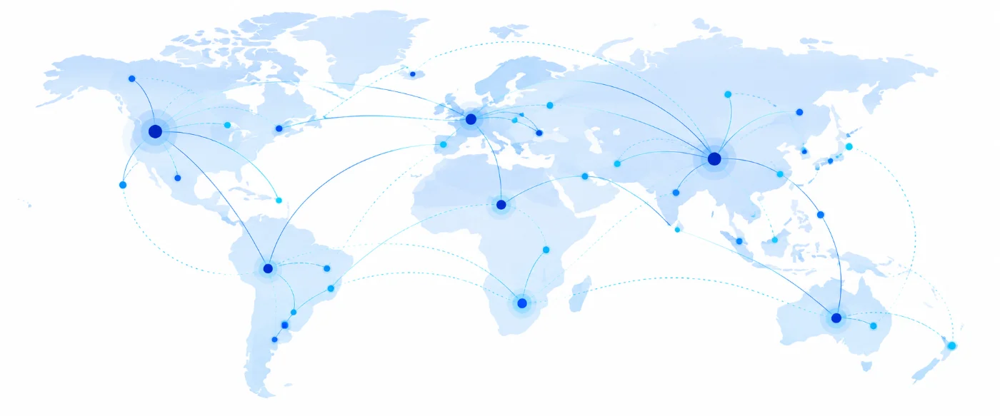

Industries we serve
01 · Enterprise L&D
Equip teams with learning that matches organizational priorities. From onboarding and role-based capability building to content modernization and global training rollouts, our approach begins with the workforce and the business outcomes that matter.
Typical needs02 · BFSI
BFSI learning requires clarity, structure and precision. Our leadership background includes large certification-focused curricula and multi-level learning initiatives. We apply this experience to learning pathway design, professional training content, subject-matter collaboration and assessment planning.
Typical needs03 · Public sector
Public-sector learning programs often involve diverse audiences, formal specifications and many stakeholders. We support requirements-led solutions across digital curriculum design, multilingual content, managed implementation and learning technology initiatives.
Typical needsGlobal delivery approach
We seek to work with organizations worldwide through remote collaboration, flexible project delivery and coordination with client teams and subject matter experts across time zones. Localization and market-specific requirements are planned as part of each engagement.
